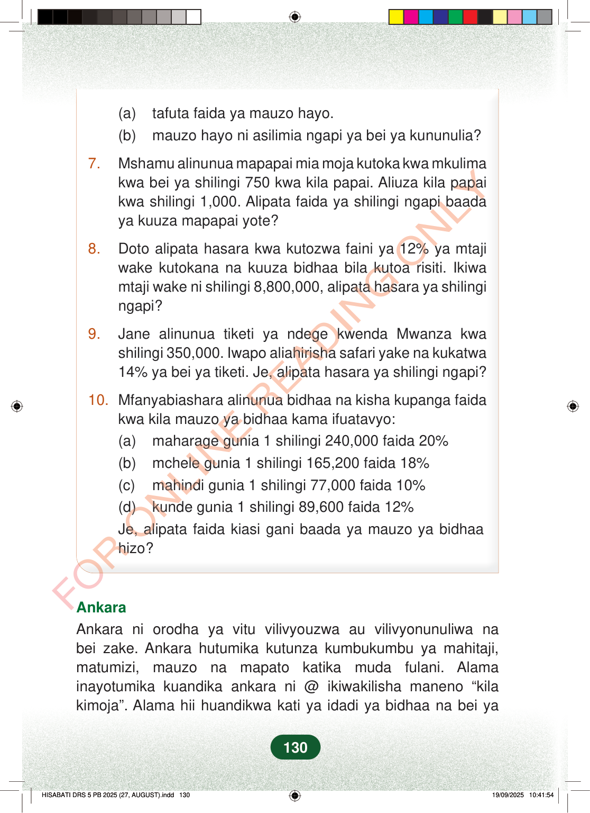

(a)tafuta faida ya mauzo hayo.(b)mauzo hayo ni asilimia ngapi ya bei ya kununulia?7.Mshamu alinunua mapapai mia moja kutoka kwa mkulimakwa bei ya shilingi 750 kwa kila papai. Aliuza kila papaikwa shilingi 1,000. Alipata faida ya shilingi ngapi baadaya kuuza mapapai yote?8.Doto alipata hasara kwa kutozwa faini ya 12% ya mtajiwake kutokana na kuuza bidhaa bila kutoa risiti. Ikiwamtaji wake ni shilingi 8,800,000, alipata hasara ya shilingingapi?9.Jane alinunua tiketi ya ndege kwenda Mwanza kwashilingi 350,000. Iwapo aliahirisha safari yake na kukatwa14% ya bei ya tiketi. Je, alipata hasara ya shilingi ngapi?10.Mfanyabiashara alinunua bidhaa na kisha kupanga faidakwa kila mauzo ya bidhaa kama ifuatavyo:(a)maharage gunia 1 shilingi 240,000 faida 20%(b)mchele gunia 1 shilingi 165,200 faida 18%(c)mahindi gunia 1 shilingi 77,000 faida 10%(d)kunde gunia 1 shilingi 89,600 faida 12%Je, alipata faida kiasi gani baada ya mauzo ya bidhaahizo?AnkaraAnkara ni orodha ya vitu vilivyouzwa au vilivyonunuliwa nabei zake. Ankara hutumika kutunza kumbukumbu ya mahitaji,matumizi, mauzo na mapato katika muda fulani. Alamainayotumika kuandika ankara ni @ ikiwakilisha maneno “kilakimoja”. Alama hii huandikwa kati ya idadi ya bidhaa na bei ya130
(a) tafuta faida ya mauzo hayo. (b) mauzo hayo ni asilimia ngapi ya bei ya kununulia?
7. Mshamu alinunua mapapai mia moja kutoka kwa mkulima kwa bei ya shilingi 750 kwa kila papai. Aliuza kila papai kwa shilingi 1,000. Alipata faida ya shilingi ngapi baada ya kuuza mapapai yote?
8. Doto alipata hasara kwa kutozwa faini ya 12% ya mtaji wake kutokana na kuuza bidhaa bila kutoa risiti. Ikiwa mtaji wake ni shilingi 8,800,000, alipata hasara ya shilingi ngapi?
9. Jane alinunua tiketi ya ndege kwenda Mwanza kwa shilingi 350,000. Iwapo aliahirisha safari yake na kukatwa 14% ya bei ya tiketi. Je, alipata hasara ya shilingi ngapi?
10. Mfanyabiashara alinunua bidhaa na kisha kupanga faida kwa kila mauzo ya bidhaa kama ifuatavyo: (a) maharage gunia 1 shilingi 240,000 faida 20% (b) mchele gunia 1 shilingi 165,200 faida 18% (c) mahindi gunia 1 shilingi 77,000 faida 10% (d) kunde gunia 1 shilingi 89,600 faida 12% Je, alipata faida kiasi gani baada ya mauzo ya bidhaa hizo?
Ankara Ankara ni orodha ya vitu vilivyouzwa au vilivyonunuliwa na bei zake. Ankara hutumika kutunza kumbukumbu ya mahitaji, matumizi, mauzo na mapato katika muda fulani. Alama inayotumika kuandika ankara ni @ ikiwakilisha maneno “kila kimoja”. Alama hii huandikwa kati ya idadi ya bidhaa na bei ya
130
(a) tafuta faida ya mauzo hayo.(b) mauzo hayo ni asilimia ngapi ya bei ya kununulia?7.Mshamu alinunua mapapai mia moja kutoka kwa mkulima kwa bei ya shilingi 750 kwa kila papai.Aliuza kila papai kwa shilingi 1,000.Alipata faida ya shilingi ngapi baada ya kuuza mapapai yote?8.Doto alipata hasara kwa kutozwa faini ya 12% ya mtaji wake kutokana na kuuza bidhaa bila kutoa risiti.Ikiwa mtaji wake ni shilingi 8,800,000, alipata hasara ya shilingi ngapi?9.Jane alinunua tiketi ya ndege kwenda Mwanza kwa shilingi 350,000.Iwapo aliahirisha safari yake na kukatwa 14% ya bei ya tiketi.Je, alipata hasara ya shilingi ngapi?10.Mfanyabiashara alinunua bidhaa na kisha kupanga faida kwa kila mauzo ya bidhaa kama ifuatavyo:(a) maharage gunia 1 shilingi 240,000 faida 20%(b) mchele gunia 1 shilingi 165,200 faida 18%(c) mahindi gunia 1 shilingi 77,000 faida 10%(d) kunde gunia 1 shilingi 89,600 faida 12%Je, alipata faida kiasi gani baada ya mauzo ya bidhaa hizo?AnkaraAnkara ni orodha ya vitu vilivyouzwa au vilivyonunuliwa na bei zake.Ankara hutumika kutunza kumbukumbu ya mahitaji, matumizi, mauzo na mapato katika muda fulani.Alama inayotumika kuandika ankara ni @ ikiwakilisha maneno “kila kimoja”.Alama hii huandikwa kati ya idadi ya bidhaa na bei ya